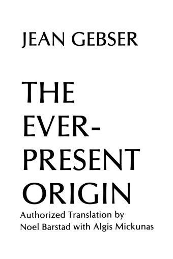

SHREEDA SEGAN
Born, anfeg. Currently, Austin (Texas)
Writer
Meridian Mag, MercuryI’ve been writing online since 2014 – this blog is home to a half million words I’ve written about software research, creative work, community, and the life I live in between.
When I am introduced at social gatherings, the host or hostess usually says: "Hi, I want you to meet Philip Yaffe. He is a professional writer." I almost always get the same response: "Oh, really. What type of novels do you write?" In other words, people automatically associate the term "writer" with "literature," as if fiction were the only type of writing. It isn't. And for most ordinary people, such as myself, it is the least important, yet it always seems to take pride of place.
- Tim Beiko
- Internet Writer Workflows
- How Jonathan Hillis' Cabin Became a DAO
- DAO Incorporation
- Brian Flynn
- A New Old Pattern Language
BDFs3
yakcollective.orgBenevolent Dictator for Season 3 for the Governance Studies group.
On The Internet
| Twitter: @freeshreeda |
| Farcaster: @shreeda |
| LinkedIn: @shreeda |
| Email: shreedashreeda [at] gmail [dot] com |
whole earth catalog, field notes, journal, writerly, typewriter, modern, newspaper, editorial, minimalist-ish, earth, neutral, and jewel tones… christopher alexander.
Things I Love
I notice that in these instances I am most empowered to reach for a future that feels truly worthwhile. I can swallow the hard truths of a sociopathic necessity that working for a worthwhile future may entail; I can appreciate how deep my affections for my budding lover run, as there is a decompression in my chest that leads to newly opened cavities of affectation.
I am in love with this sunlight as it cuts through the lightness of open and yet to be plowed fields.
Music
Enjoy EDM, why.
- Artist name: sojgwbsbeberbe
- Artist name: that working for a worthwhile future may entail; I can appreciate how deep my affections for my budding lover run, as the
- Artist name: scale the mountain, with my canine companion in close but free proximity. I notice that in these instances I
Movies
Etc, etc.
- Movie name: sojgwbsbeberbe
- Movie name: that working for a worthwhile future may entail; I can appreciate how deep my affections for my budding lover run, as the
- Movie name: scale the mountain, with my canine companion in close but free proximity.
I notice that in these instances I

Beginning: XXth Month, 2021 (?)
Powerlifting
Started out at Starting Strength (Austin), currently at .
| Lift | Numbers |
|---|---|
| Bench | 5x1 x 137.5lbs |
| Shoulder press | 5x1 x 100lbs |
| Squat | 5x1 x 225lbs |
| Deadlift | 1x1 x 295lbs |
Maybe write a long-ish paragraph about your philosophy of lifting, why you like it, what your goals are, etc.
The Iron is the best antidepressant I have ever found. There is no better way to fight weakness than with strength. Once the mind and body have been awakened to their true potential, it’s impossible to turn back. The Iron never lies to you. You can walk outside and listen to all kinds of talk, get told that you’re a god or a total bastard. The Iron will always kick you the real deal. ––– Henry Rollins
Pottery
Click to scroll through some of my favourite pieces below, and see the rest of my work here

Tim Beiko on Ethereum's moonshot
Despite the events of the past year, Tim Beiko still believes in seeing Ethereum to its ultimate form: a protocol for human coordination.

How Jonathan Hillis’ cabin became a DAO
He left Instacart with an unclear vision. What came next — a decentralized city for creators, by creators — has proved an experimental success.

A New Old Pattern Language
By adapting Christopher Alexander’s existing scheme to the new challenges of a post-Covid world, we can build A New Old Pattern Language.
| TOPIC | MY NOTES | RESOURCES |
|---|---|---|
| Governance studies | gojsg oej oj he was thsi guy | |
| Design systems | ||
| Future of work | ||
| Alt-economies | ||
| Protocols & Platforms |
Blogroll
- Ribbonfarm
- More Crows Than Eagles
- Pixel Space
- Tom Critchlow
When I look back at my career (?) I’ve always been remixing, hacking and tinkering with the web. Trying to ask
questions like "what does the web feel like?", "how do you treat the web as a texture?" & "what can you do with
the web?". This one's very much of the web with three things: 
Small libraries, poetic collections and indie archives are magical things. You stumble across some personal
archive or collection and it feels like a treasure trove. But publishing stuff to the web in the format of a
collection, library or archive is still kind of hard? I wrote up a post about why this matters here:
→ The Magic of Small Databases: Notes on personal libraries, collections and small indexes on the web There's a
ton of options here but STILL none of them satisfy me. If you're building a collection or working on tooling for
this space shoot me a note!